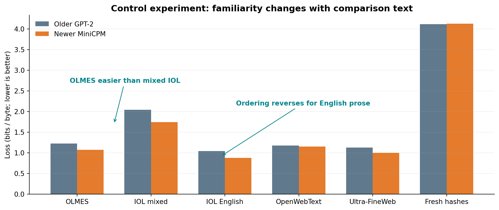
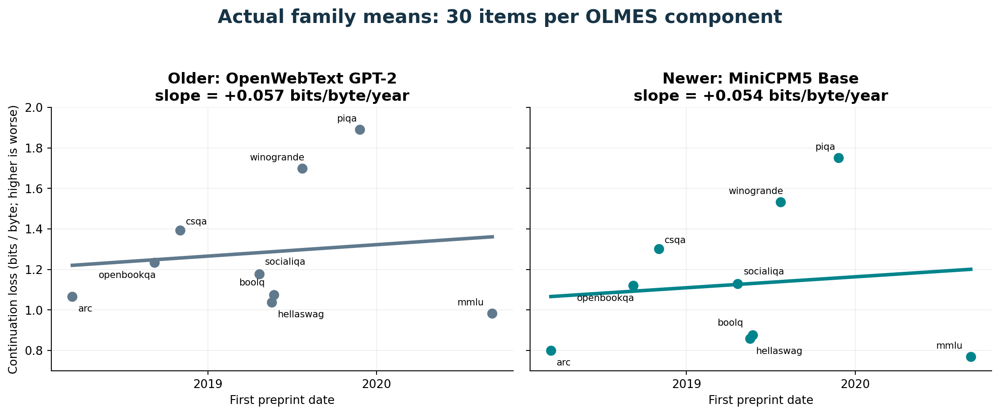
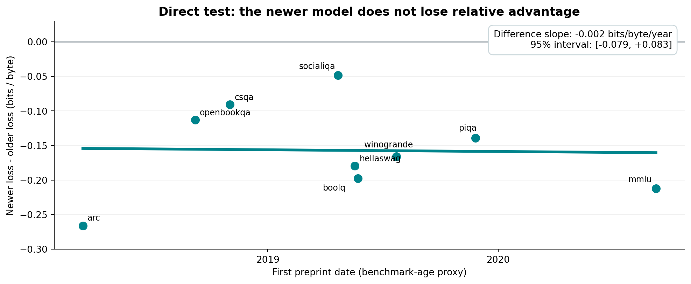

Experiment notes · Language models
Can a model recognize the exam?
A small test of benchmark familiarity, inspired by the question of where pretraining progress comes from.
OLMES looked familiar until I changed the comparison text. Benchmark-age loss slopes were nearly parallel. In a calibration-free word-ranking check, top-1 and top-5/top-10 moved in opposite temporal directions; every interval included zero, and the novel control improved even more than OLMES.
01 / The question
Better data—or a more familiar exam?
In “Pretraining progress is mostly coming from data,” Dwarkesh Patel and Jerry Han compare combinations of model recipes and data corpora from 2019–2025. They train models from scratch and evaluate downstream capability with OLMES. At their largest tested compute budget, 1019 FLOPs, they report compute-efficiency gains of 12.0× from data improvements and 3.7× from model improvements. They also discuss scale and benchmark dependence.
That made me wonder: when newer data improves performance on an established benchmark, how much might familiarity with the benchmark contribute? Better curation could improve generalization, but benchmark questions and related material can also circulate online.
My experiments are a much smaller probe of that possibility. I did not reproduce their controlled training study, use their trained checkpoints, or measure how much of their reported gain comes from leakage. I compared two existing models and asked how well they predict the wording of benchmark questions.
The distinction matters. A model can be good at solving an unfamiliar question. It can also be good at predicting a familiar-looking sentence without having seen that exact sentence before. I needed controls before interpreting either as memorization.
02 / The method
Predict the question, not the answer
I gave each model the beginning of a question and measured how much probability it assigned to the remaining words. No answer choices or correct answers were supplied. This measures continuation loss, not exam accuracy.
“Which material would be best for” “keeping a drink cold?”
The primary setting reveals approximately half the words. I also checked 25% and 75% prefixes. Scoring is teacher forced: when scoring each token, the model sees the true preceding tokens. I did not let it generate an entire question and then grade the reconstruction.
The metric is bits per UTF-8 byte: negative log probability, converted to bits and divided by the bytes covered by the scored tokens. Lower loss means the wording is easier to predict. This gives the models a common unit despite different tokenizers, though their scored suffix boundaries can differ slightly.
For BoolQ and SocialIQA, the text includes the passage or context followed by the question. The split applies to that combined text, so some target tokens are context. For the other tasks, I used the question stem or completion context.
03 / Experiment 1
The controls changed the story
The initial idea was to compare OLMES with both familiar corpus text and genuinely recent benchmark material. If OLMES had been encountered during training, perhaps its loss would resemble the corpus controls more than the recent benchmark.
I sampled 30 OLMES items—three from each of its ten standard components—and 30 passages from each of OpenWebText and Ultra-FineWeb. Corpus excerpts were roughly matched to the OLMES lengths. These passages are verified corpus members, not verified records consumed by the selected checkpoints. That limits how much they can calibrate a membership claim.
For recent material, I used the human-composed 2026 International Linguistics Olympiad problems, published after both checkpoints: 30 non-overlapping excerpts from five problems. These are five independent problem clusters, not 30 independent questions. The mixed excerpts include unfamiliar languages and linguistic tables; they are not a close format match to OLMES.
I also used 30 freshly generated SHA-256 hashes as an unpredictability check. Finally, an exploratory sensitivity set used ten short English-prose excerpts from the same five IOL problems, selected by their role in the text rather than by model score. The final pilot therefore contained 160 texts.

The first comparison looked interesting. GPT-2 scored OLMES at 1.220 bits/byte and mixed IOL at 2.043. MiniCPM scored them at 1.069 and 1.742. OLMES was clearly easier to predict in these samples.
But the English-prose sensitivity reversed the mean ordering: IOL English scored 1.041 for GPT-2 and 0.874 for MiniCPM—lower than OLMES for both.
I wanted unusually easy prediction of OLMES relative to matched novel text. What I got was a result that depended strongly on which text I used as the comparison.
The English-IOL-minus-OLMES differences were −0.179 bits/byte for GPT-2, with a 95% cluster-bootstrap interval of [−0.497, +0.125], and −0.195 for MiniCPM, with [−0.464, +0.070]. Both intervals include zero. The reversed averages are not evidence that novel questions are reliably easier, either.
Normalizing against each model’s own corpus passages kept the same ordering. I used a z score: subtract the mean corpus-control loss and divide by its standard deviation, separately for each model and prefix length. This is descriptive normalization, not a membership probability. Different standard deviations also complicate cross-model comparisons.
The hashes scored 4.111 and 4.126 bits/byte, near the 4-bit ideal per random hexadecimal character. Naming OLMES in the prompt changed mean loss by only +0.023 for GPT-2 and −0.003 for MiniCPM. Neither diagnostic turned the main comparison into convincing contamination evidence.
My read: the mixed IOL material was a poor enough match that language, formatting and domain could explain the apparent familiarity signal. A release date does not make two texts comparable, or make every fact and phrase in the newer text novel.
04 / Experiment 2
Would the newer model degrade more on newer benchmarks?
I then tried a different comparison within OLMES: order the benchmark families by date and plot their question-continuation loss.
The specific hypothesis was conditional: if the newer model’s advantage disproportionately reflects exposure to older benchmarks, and that exposure advantage fades on later ones, its loss should rise more steeply with benchmark date. The key prediction is a difference between the models’ slopes, not merely a rise in both losses.
I froze a new sample of 30 items per component, 300 in total. There were 298 usable paired items in the primary half-text comparison; two very short PIQA items had no complete suffix token to score.
The dates are first arXiv submission dates, used as a proxy for benchmark age. They span 2018–2020 and do not establish when each underlying question first appeared. ARC Easy and ARC Challenge share one paper, so I averaged them into one family. That leaves nine equally weighted families for the fitted lines.

The observed slopes were almost identical: +0.057 bits/byte/year for GPT-2 and +0.054 for MiniCPM. The newer model’s mean loss was lower on every family, but its relative advantage did not noticeably fade with date.
Subtracting older-model loss from newer-model loss makes the test more direct. A positive slope in that difference would mean the newer model is losing relative advantage. The observed slope was −0.0025 bits/byte/year, with a descriptive 95% family-bootstrap interval of [−0.079, +0.083].

Expected: a steeper loss slope for the newer model. Observed: nearly parallel slopes, with about a 0.157 bits/byte advantage for MiniCPM in both the 2018 and 2019–2020 groups.
MMLU is the only 2020 family, so I checked how much it drives the result. Removing it gives a slope difference of +0.036, with interval [−0.112, +0.107]. Leaving out each family in turn gives estimates from −0.055 to +0.036. All planned prefix, cue, normalization and MMLU-exclusion intervals include zero.
That is an inconclusive result, not proof that the slopes are equal. There are only nine heterogeneous families. Their differences in domain and wording are substantial: PIQA averages about seven words, while BoolQ averages about 102 including the passage. The bootstrap holds sampled-item means fixed and does not propagate all item-sampling uncertainty.
05 / Calibration check
Replace probability values with word ranks
Raw negative log probability can be awkward across models because their probability scales differ. I therefore reran the neutral 50% continuation using exact next-word top-1, top-5 and top-10 accuracy. Words are divided only at literal spaces.
Both models still operate on subword tokens. To make the comparison exact and tokenizer-neutral, I built the intersection of strings that each tokenizer represents as one canonical token: 28,853 shared words. I evaluated only target positions in that shared vocabulary and excluded multi-token words from both models. This covers 80.2% of the OLMES continuation words. It is a clean rank comparison on that subset, not open-vocabulary word generation.

On OLMES, top-1 accuracy rises from 35.1% for GPT-2 to 42.2% for MiniCPM; top-5 rises from 60.1% to 67.6%, and top-10 from 67.2% to 75.3%. Relative to each model’s own corpus control, the OLMES advantage grows by 4.3, 7.9 and 7.4 points respectively. That looks suggestive until we check the novel English control: MiniCPM improves by 10.3 top-1 points and 12.6 top-5 points there, more than its OLMES gains. General predictive ability remains a sufficient explanation.
The date test is inconsistent across k. At top-1, the newer-model advantage grows by 1.7 percentage points per year, opposite the hypothesized direction, with a descriptive interval [−2.9, +7.9]. It declines by 1.0 point per year at top-5 [−3.6, +1.3] and 2.1 points at top-10 [−9.0, +2.9]. Every interval includes zero.
The result no longer depends on calibrated probability values, but the substantive conclusion stays the same: the temporal rank evidence changes direction with k and is compatible with no effect, while the novel-control gain shows that model ability is still confounded with familiarity.
06 / What this means
A useful question, an unresolved explanation
I started with a plausible concern and did not get convincing supporting evidence. The first experiment was sensitive to the choice of control. The second did not show a reliable loss of relative advantage on newer benchmarks. The word-rank check removed probability calibration but remained uncertain. None tells us that the models are contamination-free.
For the question raised by Patel and Han’s study, the right conclusion is modest: this pilot cannot explain their reported data gains, validate them, or dismiss them. Their experiment varies training recipes and datasets under controlled compute budgets; mine probes wording predictability in two differently sized existing checkpoints.
A better next test would use multiple years of the same exam series, with closely matched subject and format, spanning a verified training cutoff. I would want enough independent questions and, where possible, exact records known to have been consumed during training. Direct overlap checks in the actual training snapshot would provide stronger exposure evidence than loss alone.
The lesson I’m taking away is methodological: before treating low loss as memory, check what else makes the text easy to predict. In this experiment, the choice of control mattered more than the signal I was looking for.
07 / Data & report
Inspect the experiment
The PDF contains the full methodology and all three experiments. The downloadable result bundle includes the word-rank summaries, candidate-vocabulary definition, and temporal rank statistics without redistributing the sampled source text.
Run details, uncertainty and model provenance
The final pilot contains 1,380 score rows over 160 texts. The temporal run contains 3,570 valid rows of 3,600 possible combinations: 300 items × two models × two prompt conditions × three prefix fractions. Missing suffixes were not assigned zero loss. Missingness matched across models. One long BoolQ item was shortened identically; no pilot text was shortened.
Pilot contrast intervals use 5,000 resamples over document/problem clusters; IOL has only five problem clusters. Temporal intervals use 10,000 family resamples with fixed item means. Normalized comparisons do not propagate corpus-calibration uncertainty. The estimates are exploratory, and no interval addresses model-size or domain confounding.
Both models ran locally in FP16 on a GTX 1650 with 4 GB of VRAM, batch size one, evaluation mode and no KV cache. Five scoring tests passed; tokenizer round trips preserved all inputs. The original final scoring passes took 123.3 and 226.4 seconds. The final two word-rank passes took 107.9 and 103.4 seconds. Paid-service cost was $0; these times exclude setup, downloads and earlier iterations.
No model or membership probe was trained. The original full-corpus overlap proposal was not completed; corpus samples supplied the controls. Failed search-index requests were not evidence of absence.
Older checkpoint: stanford-crfm/battlestar-gpt2-small-x49, 124,439,808 parameters, pinned June 20, 2022 revision. Newer: openbmb/MiniCPM5-1B-Base, 1,080,632,832 parameters, pinned May 25, 2026 revision. The bundle records exact revisions, benchmark dates and source links.
Sources
- Dwarkesh Patel & Jerry Han: Pretraining progress is mostly coming from data — the study that motivated the question.
- OLMES reference implementation — benchmark suite and pinned implementation.
- Stanford Mistral checkpoint documentation — OpenWebText training provenance.
- IOL 2026 official problem booklet and Problem Committee — recent contest material and authorship provenance.
Experiment and writeup developed with Codex. Results are reported from the saved runs; the schematic hypothesis in the PDF is illustrative, not measured data.